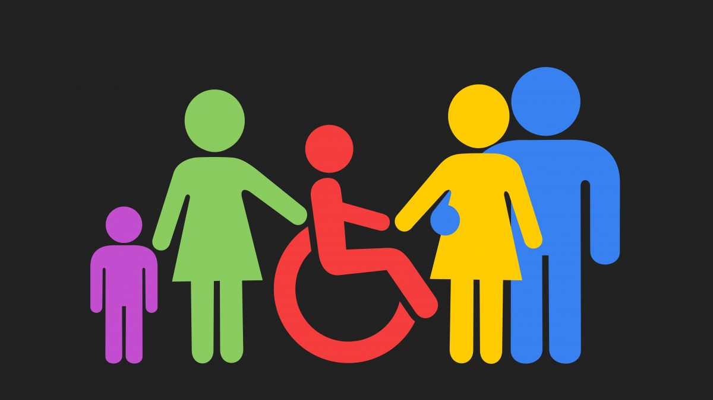

O que é Acessibilidade Digital?
Acessibilidade é a possibilidade de acessar um lugar, serviço, produto ou informação de maneira segura e
autônoma, sem nenhum tipo de barreira, beneficiando a todas as pessoas, com ou sem deficiência, em todas
as fases da vida. A acessibilidade permite oferecer a todos os diferentes oportunidades iguais,
independentemente de sua capacidade ou circunstâncias.
O que é Desenho Universal?
Criado por uma pessoa com deficiência, o Desenho Universal não é uma tecnologia direcionada
exclusivamente para esse público, mas existe justamente para unir todas as pessoas. Sua capacidade de
transformação alcança aspectos diversos, desde a infraestrutura urbana, com seus prédios públicos e
casas, até produtos do cotidiano de qualquer um que viva em sociedade. Mas do que isso se trata?
